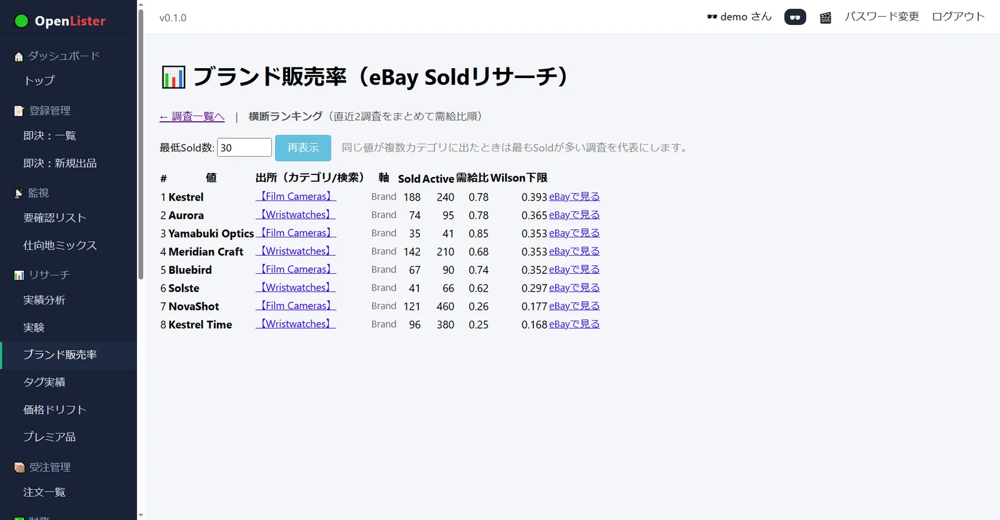
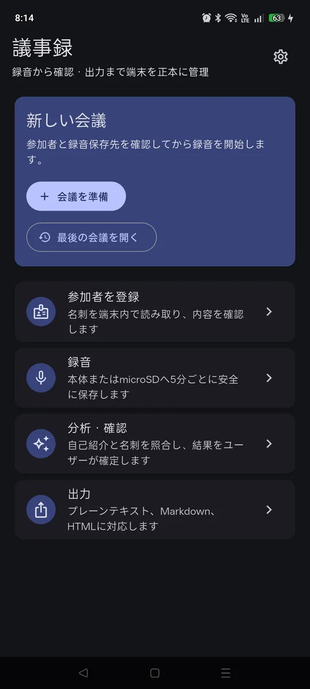

Because we sell, we know what to build. Because we build, we can change how we sell.
01 / Commerceカメラ・腕時計・アイウェア・オーディオなど日本の品を eBay の4市場と Amazon.co.jp で販売しています。1点ずつ検品して梱包し世界へ送ります。We sell cameras, watches, eyewear, audio equipment and more from Japan across four eBay markets and Amazon.co.jp, inspecting and packing each item by hand.
02 / Engineering出品・在庫監視・関税計算・経理。商いに必要な道具は市販品に頼らず自社で開発しています。毎日自分たちで使うので、止まれば真っ先に自分たちが困ります。Listing, stock monitoring, tariff calculation, accounting — we build the tools our trade needs instead of buying them. We use them daily, so we are the first to suffer when they break.
事業のかたちHow the business works
売る・測る・作る・任せる。 ひとつの輪で回す。Sell, measure, build, automate — one loop.
Commerce and engineering are not separate departments here. What we learn from selling becomes data, the data becomes tooling the same day, and work that runs smoothly is handed to machines. The faster this loop turns, the stronger the business.
01
売るSell
日本の品を5つの市場の買い手へ。毎日の注文が次に作るものを教えてくれます。Goods from Japan to buyers in five markets. Every day's orders tell us what to build next.
02
測るMeasure
注文・在庫・送料・関税をすべて記録し、請求の実額と突き合わせます。勘ではなく実測で決めます。Orders, stock, shipping and duties are all recorded and reconciled against real invoices. We decide on measurements, not hunches.
03
作るBuild
現場の気づきをその日のうちに機能にします。AI エージェントと開発し、テストを通ったものだけを本番へ。Floor feedback becomes a feature the same day. We develop with AI agents, and only what passes the tests goes to production.
04
任せるAutomate
回るようになった仕事は定期ジョブと AI に渡します。人には判断だけを残します。Work that runs smoothly is handed to scheduled jobs and AI. People keep the decisions.
監視している出品Listings under watch
14,444
在庫の自動確認（1日あたり）Automated stock checks per day
27,278
自動テストAutomated tests
2,281
昼も夜も回る定期ジョブScheduled jobs, day and night
33
2026-11-24 時点・本番環境の実測値Measured in production as of 2026-11-24
技術Capabilities
動き続ける仕組みを作る。We build systems that keep running.
外部のサイトも API も AI も、いつか予告なく変わります。うまく動く日ではなく黙って壊れる日のために設計の時間を使っています。
External sites, APIs and AI models all change without notice. We spend our design time not on the day things work, but on the day they break without a sound.
01 / AI
AI を業務に組み込むAI inside the workflow
3社のモデルを連鎖させ、どの段が答えたかまで計測します。文章の生成・分類・重量や関税コードの推定を本番で回しています。Three providers chained together, with every answer attributed to the model that gave it. Text generation, classification, weight and tariff-code estimation run in production.
02 / Integration
外部のサービスをつなぐEverything connected
eBay・Amazon・運送会社・税関データの API と、11のマーケットプレイスの読み取りをひとつの流れにまとめます。APIs from eBay, Amazon, carriers and customs data, plus readers for 11 marketplaces, brought into a single flow.
03 / Automation
止まらない自動化Automation that doesn't stop
33の定期ジョブが昼も夜も回ります。読み取りの異常は毎朝の検査が見つけ、迷ったら安全な側へ倒します。33 scheduled jobs run around the clock. A canary catches read failures every morning, and when in doubt the system fails to the safe side.
04 / Reconciliation
数字を合わせるNumbers that agree
eBay の全出品と自社の記録を毎朝突き合わせます。売上・請求・入金は月次で1円単位まで合わせます。Every eBay listing is compared with our own records each morning. Sales, invoices and payouts are reconciled monthly, down to the yen.
05 / Surfaces
画面を選ばないAny surface
Web アプリ・ブラウザ拡張・デスクトップ・スマートフォン。使う場所に合わせて作ります。Web apps, browser extensions, desktop tools and mobile apps — built for wherever the work happens.
06 / Human in the loop
人が決める設計People decide
お金と顧客に触れる操作は人の承認を通します。AI に任せる範囲を先に決めてから作ります。Anything that touches money or customers goes through human approval. We draw the line for AI first, then build.
From back-office systems to browser extensions, desktop tools and mobile apps. Each was built for our own floor and is refined in daily use.
openlister

主力システム・本番運用中Flagship · in production
OpenLister
eBay 輸出のリサーチから経理までをひとつにつなぐ運用システム。自社の本番で毎日使いながら育てています。An operations system that connects eBay export work from research to accounting. We run our own business on it every day.
録音から AI が議事録を作る Android アプリ。話者の候補・名刺の読み取り・連絡先との連携まで扱います。An Android app that turns recordings into structured minutes with AI — speaker candidates, business-card OCR and contact sync included.
Flutter · Android · Gemini API

本番運用中In productionAmaLister
Amazon.co.jp 向けの出品・在庫監視・受注システム。OpenLister の姉妹として2026年10月から動いています。Listing, stock monitoring and order handling for Amazon.co.jp. A sibling of OpenLister, live since October 2026.
Python · FastAPI · SP-API
Web アプリWeb appHTS Tariff Calculator
米国国際貿易委員会の HTS API と AI を組み合わせ、Section 232 や 301 を含む米国の輸入関税を計算します。Combines the USITC HTS API with AI to calculate US import duties, including Section 232 and 301 tariffs.
TypeScript · React · Node.js
デスクトップDesktopeBay Credential Helper
eBay API の認証情報を画面の案内どおりに取得できるツール。処理は手元の PC の中だけで完結します。A guided tool for obtaining eBay API credentials. Everything runs locally on the user's own machine.
Python · Windows / macOS
AI エージェント基盤Agent toolingllm-wiki-kit
AI エージェントに会話をまたぐ知識ベースを持たせるキット。過去の判断と失敗を次の開発に効かせます。Gives AI coding agents a knowledge base that persists across sessions, so past decisions and failures inform the next change.
A very small team landed 836 commits and 2,281 tests in 144 days because AI agents sit at the center of our development. The rules that keep speed from eating safety came first.
仕様書から始めるStart from a written spec
AI に実装を任せる前に、読む場所・守る契約・テストを文章にします。Before an agent writes code, we put what to read, which contracts to keep and how to test into words.
気づきをその日のうちにFeedback ships the same day
使う人のひとことを当日に実装して配り、マニュアルも一緒に更新します。A remark from someone using the tool is implemented, released and documented the same day.
判断を残すDecisions are written down
なぜそう決めたか・何に失敗したかを社内の Wiki に書き、次の開発で AI と人の両方が読みます。190ページを超えました。Why we decided something and what went wrong go into an internal wiki that both agents and people read. It now exceeds 190 pages.
失敗を検査に変えるFailures become checks
一度起きた事故は自動の検査にして全経路へ入れます。同じ失敗を二度しない仕組みを積み上げています。An incident that happened once becomes an automated check on every path. The defenses only accumulate.